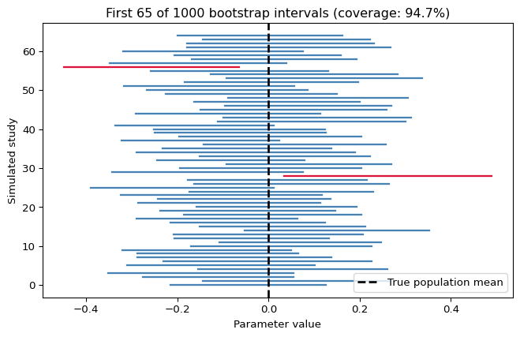

Why Does a 95% Confidence Interval Work? A Simulation-Based Explanation
Author
Xunyao Xu
Published
November 2, 2026
Introduction
When a researcher reports a 95% confidence interval, what does 95% mean? It does not indicate that there is a 95% chance that a fixed, already-computed interval contains the unknown population mean. Instead, the procedure is designed so that if we were to repeat the study many times, around 95% of the resulting intervals would contain the true population mean. Simulation helps illustrate this distinction. Here, I build bootstrap confidence intervals, evaluate their coverage over repeated samples, and then use a simulated null distribution to explain p-values and hypothesis testing.
We simulate observations from a standard normal population with a true mean of 0 and a standard deviation of 1. Each sample contains 100 observations. We use 3,500 bootstrap resamples to construct each confidence interval and repeat the experiment 1,000 times to evaluate the coverage probability.
All observations below are synthetic. I generate them from a normal population with a known mean and standard deviation so we can directly evaluate how often the confidence intervals capture the true parameter. This is a teaching exercise, not an empirical estimate based on real-world data.
Code
import numpy as npimport matplotlib.pyplot as pltfrom scipy.stats import normSEED =64008rng = np.random.default_rng(SEED)TRUE_MEAN =0.0POP_SD =1.0N =100B =3500# bootstrap resamples for each intervalR =1000# independent simulated studiesALPHA =0.05
1. Building a bootstrap confidence interval
Suppose we only have one random sample of size 100. Since we do not know the population mean, we approximate it with the sample mean. The bootstrap uses the observed sample as a proxy for the population: sample 100 values with replacement, compute the mean, repeat 3500 times. The distribution you obtain tells you how the sample mean might change given what you know about this sample.
The two red lines mark the 2.5th and 97.5th percentiles of the bootstrap estimates. This is a percentile bootstrap interval, one of several ways to construct a bootstrap confidence interval. A single interval can either cover the population mean or miss it; the 95% interpretation refers to the procedure’s long-run performance.
In this simulation, the bootstrap 95% confidence interval is approximately [-0.372, 0.008], which contains the true population mean of 0.
2. Does a 95% interval cover the truth 95% of the time?
Now repeat the entire experiment 1000 times: draw a fresh original sample, compute a new bootstrap distribution, and make a new 95% interval. Since we set the true population mean to zero, each interval can be classified as a success or failure. This repeated-study step—not just resampling one fixed sample—is essential for measuring coverage.
Empirical coverage: 94.7% (947 out of 1000 intervals)

In our simulation, 947 out of 1,000 confidence intervals contain the true population mean of 0, resulting in an empirical coverage rate of 94.7%. This is close to the nominal 95% confidence level, illustrating how confidence intervals achieve their intended coverage over repeated sampling. The small difference from 95% reflects simulation variability and possible finite-sample effects.
The empirical coverage rate should be approximately (not exactly) 95%: finite Monte Carlo simulations fluctuate. The percentile bootstrap does not ensure precise nominal coverage for all populations and sample sizes. This example using a normal population helps demonstrate why confidence intervals are evaluated based on how often they cover a specific parameter over repeated samples.
3. Hypothesis testing and the null distribution
Suppose we test H₀: μ = 0 against H₁: μ ≠ 0, assuming the population standard deviation is known to be one. For a sample of size 100, the z-statistic is \(Z=(\bar X - 0)/(1/\sqrt{100})\). When the null is true and the data are normal, it follows a standard normal distribution. We can verify this by simulating 10,000 null samples and calculating a z-statistic for each.
The red shaded regions represent the rejection regions at the 5% significance level. We reject the null hypothesis if the z-statistic is less than −1.96 or greater than +1.96. The orange shaded regions illustrate the tail areas corresponding to the two-sided p-value, which is the probability of observing a test statistic at least as extreme as ours in either direction, assuming the null hypothesis is true.
In our simulation, the observed z-statistic is approximately 3.647, with a simulated p-value of 0.0001. Since the p-value is below 0.05, we reject the null hypothesis. However, the p-value does not represent the probability that the null hypothesis is true. Although the observed sample was generated with a positive mean shift, the reference distribution and p-value were calculated under the null hypothesis.
Conclusion
Bootstrap resampling approximates the uncertainty of an estimate using a sample. Repeating the whole sampling-and-interval operation shows what 95% coverage means. Over the long run, nearly 95% of intervals produced by a well-calibrated procedure will contain the fixed population parameter. The principle of repeated sampling is also used in hypothesis testing, but it starts with a null hypothesis and asks how extreme a statistic would be if the null hypothesis were true. It is easier to see why these methods make sense when we plot their sample distributions, rather than treating confidence levels and p-values as mysterious probabilities.
In our experiment, the empirical coverage rate was 94.7%, close to the nominal 95% confidence level. The hypothesis test also demonstrated how an extreme observed z-statistic can lead to a small p-value and rejection of the null hypothesis.
Reproducibility
The complete Python code is embedded in this Quarto document. The data are synthetic and generated with a fixed random seed, so no external dataset is required. Run quarto render index.qmd in an environment with the dependencies listed in requirements.txt.